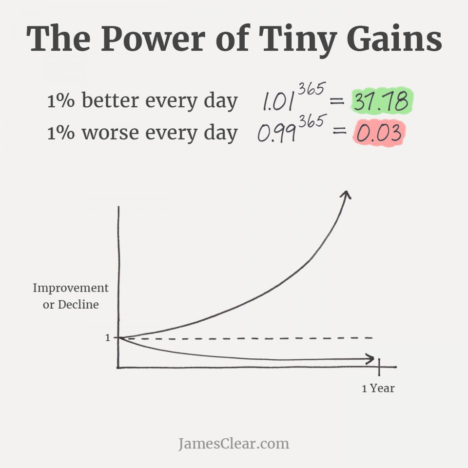

This site provides a chapter-by-chapter summary of Atomic Habits by James Clear. Navigate through the chapters to explore the key concepts, ideas, and actionable advice from the book.
Use the link below to start reading:
Quick summary + list of all chapters! 